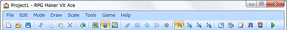

The menus and commands available on the menu bar are described below.
A number of menu bar commands can also be executed by clicking their associated icon buttons on the toolbar. In addition, menus and commands with shortcut keys displayed next to them can be selected by pressing the associated keys.
This means there are a number of ways to execute the same command. For example, to execute the Undo command, you can click Undo on the Edit menu, hold down the CTRL key while pressing the Z key (CTRL+Z), or click the Undo button on the toolbar.
Creates a new project. If a project is already open, it will be closed once the new one has been created.
Opens a previously saved project so that you can continue creating your game. In the Open window that appears, select the Game or Game.rvproj2 file in the project folder.
Closes the current project. A confirmation dialog box appears if there is unsaved data. To save your project before closing it, click Yes, or to close it without saving, click No.
Saves the project you are currently working on. (This overwrites any existing data for the same project.)
Compresses the project you are currently working on into a single file to make it easier to distribute. See Support Tools for more information.
Closes the program. As with the Close Project command, a confirmation dialog box appears if there is unsaved data.
Undoes the previous operation, returning to the state immediately before it was performed. Up to sixteen previous operations can be undone.
Copies the selected map data or map event to the clipboard and deletes the original selection.
Copies the selected map data or map event to the clipboard without deleting the original selection.
Adds the content of the clipboard as new map data or a new map event.
Switches to the mode for editing map design.
Switches to the mode for creating/editing map events. In map view, a grid split up into tile-size spaces is overlaid onto the map.
Switches to the mode for editing regions, which define the encounter area for enemy groups.
Contains tools for drawing tiles used in map editing mode. See Editing Map Design for more information.
Switches the display scale for the map displayed in map view. The standard scale is 1/1, but you can select 1/2, 1/4, or 1/8 to reduce the map to the indicated scale.
Opens a dialog box for setting the database used to create/edit game elements, such as characters and items.
Displays tools for managing resource files used to create games, including images, music, and movies. See Support Tools for more information.
Opens the Script Editor tool for scripting and editing the game system. See Support Tools for more information.
Listen to the audio you imported into your project as resource files. See Support Tools for more information.
Create a walking graphic and a face graphic for characters by combining various parts that are provided. See Support Tools for more information.
Change settings related to image transparency and grid display in the editor. See Support Tools for more information.
Start the play test tool. See Support Tools for more information.
Change the setting for starting a game in full screen mode. Selecting this item switches between enabled (a check in the check box) and disabled.
Change the setting for displaying a console window for debugger output. Selecting this item switches between enabled (a check in the check box) and disabled.
Open the save folder for the project. Use this command to check the location of the project folder and to access files that you want to work on manually.
Display Help (this window).
Open the RPG Maker Web (http://tkool.jp/) site in your browser. Visit the site whenever you want to check support information for the program and get other important information.
View version and other information about the program.